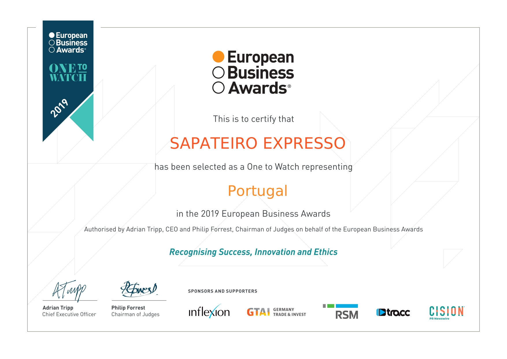

SAPATEIRO EXPRESSO
Está no mercado desde 2003, chegou a Campolide em 2009 e tem vindo
a ganhar confiança dos habitantes do bairro e em 2015 tornou-se uma marca registada, altura em que
simultaneamente foi criado e começou a circular em Lisboa e Grande Lisboa o SAPATEIRO EXPRESSO
MÓVEL.
Já conta com mais de 40 parcerias em empresas públicas e privadas, escritórios de advogados e dá diariamente
assistência aos clientes dos hotéis na Cidade de Lisboa. Tem também disponível para todos os clientes um
serviço ao domicílio.
O sapateiro expresso móvel anda na cidade, continua a fazer recolhas e entregas mas agora com esta oficina
móvel pode solicitar também as reparações na hora, e não precisa de sair do seu local de trabalho nem de
casa.
Assim, já pode tratar do arranjo do seu calçado, malas e carteiras, sem sair de casa ou do
escritório. O objectivo diário do SAPATEIRO EXPRESSO é manter a qualidade e a rapidez e sempre na procura de
conquistar o próximo cliente.
Este serviço vai ao encontro de todos os clientes para quem o tempo é um valor.
Em 2016 foi finalista
do concurso de empreendedorismo ACREDITA PORTUGAL.
Em 2018 e 2019 foi igualmente finalista dos prémios EBA –
EUROPEAN BUSINESS AWARDS na categoria ONES TO WATCH FOR PORTUGAL.



Facebook
sapateiroexpressocampolide@gmail.com
Youtube
Instagram
Twitter